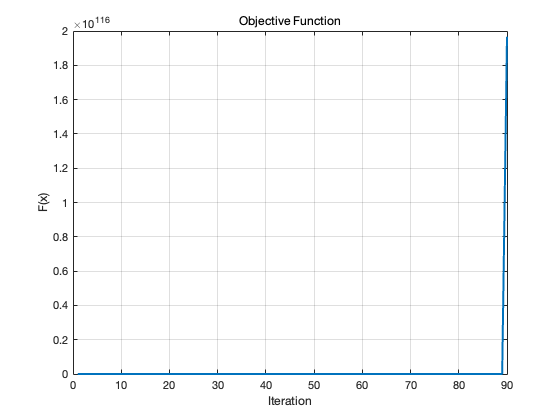

G = @(x) [
x(1)^2 - x(2)^2 - 10 ;
x(1) - 3*x(2) + 10 ];
JG = @(x) [
x(1)*2, x(2)*2 ;
1, -3 ];
F = @(x) 0.5 * sum(G(x).^2);
dF = @(x) JG(x).' * G(x);
GAMMA = 0.001;
MAX_ITER = 1000;
FUNC_TOL = 0.1;
fvals = [];
progress = @(iter,x) fprintf('iter = %3d: x = %-32s, F(x) = %f\n', ...
iter, mat2str(x,6), F(x));
iter = 1;
x = [0; 0];
fvals(iter) = F(x);
progress(iter, x);
while iter < MAX_ITER && fvals(end) > FUNC_TOL
iter = iter + 1;
x = x - GAMMA * dF(x);
fvals(iter) = F(x);
progress(iter, x);
end
plot(1:iter, fvals, 'LineWidth',2); grid on;
title('Objective Function'); xlabel('Iteration'); ylabel('F(x)');
disp('G(x) = '); disp(G(x))
iter = 1: x = [0;0] , F(x) = 100.000000
iter = 2: x = [-0.01;0.03] , F(x) = 99.013000
iter = 3: x = [-0.0201;0.0603] , F(x) = 98.042525
iter = 4: x = [-0.0303011;0.0909034] , F(x) = 97.089273
iter = 5: x = [-0.0406046;0.121814] , F(x) = 96.153962
iter = 6: x = [-0.0510117;0.153035] , F(x) = 95.237330
iter = 7: x = [-0.061524;0.184572] , F(x) = 94.340138
iter = 8: x = [-0.0721429;0.216429] , F(x) = 93.463172
iter = 9: x = [-0.0828704;0.248611] , F(x) = 92.607247
iter = 10: x = [-0.0937082;0.281125] , F(x) = 91.773209
iter = 11: x = [-0.104658;0.313975] , F(x) = 90.961937
iter = 12: x = [-0.115723;0.34717] , F(x) = 90.174350
iter = 13: x = [-0.126905;0.380716] , F(x) = 89.411409
iter = 14: x = [-0.138207;0.414621] , F(x) = 88.674120
iter = 15: x = [-0.149631;0.448894] , F(x) = 87.963541
iter = 16: x = [-0.161181;0.483544] , F(x) = 87.280788
iter = 17: x = [-0.17286;0.518581] , F(x) = 86.627037
iter = 18: x = [-0.184671;0.554014] , F(x) = 86.003535
iter = 19: x = [-0.196619;0.589857] , F(x) = 85.411604
iter = 20: x = [-0.208707;0.62612] , F(x) = 84.852648
iter = 21: x = [-0.220939;0.662818] , F(x) = 84.328166
iter = 22: x = [-0.233321;0.699964] , F(x) = 83.839757
iter = 23: x = [-0.245858;0.737573] , F(x) = 83.389133
iter = 24: x = [-0.258554;0.775662] , F(x) = 82.978129
iter = 25: x = [-0.271416;0.814248] , F(x) = 82.608719
iter = 26: x = [-0.28445;0.85335] , F(x) = 82.283026
iter = 27: x = [-0.297663;0.892989] , F(x) = 82.003344
iter = 28: x = [-0.311061;0.933184] , F(x) = 81.772149
iter = 29: x = [-0.324654;0.973961] , F(x) = 81.592127
iter = 30: x = [-0.338448;1.01534] , F(x) = 81.466191
iter = 31: x = [-0.352452;1.05736] , F(x) = 81.397511
iter = 32: x = [-0.366678;1.10003] , F(x) = 81.389539
iter = 33: x = [-0.381133;1.1434] , F(x) = 81.446045
iter = 34: x = [-0.39583;1.18749] , F(x) = 81.571153
iter = 35: x = [-0.410781;1.23234] , F(x) = 81.769385
iter = 36: x = [-0.425998;1.27799] , F(x) = 82.045706
iter = 37: x = [-0.441495;1.32448] , F(x) = 82.405584
iter = 38: x = [-0.457286;1.37186] , F(x) = 82.855048
iter = 39: x = [-0.473389;1.42017] , F(x) = 83.400765
iter = 40: x = [-0.489821;1.46946] , F(x) = 84.050123
iter = 41: x = [-0.506599;1.5198] , F(x) = 84.811328
iter = 42: x = [-0.523745;1.57124] , F(x) = 85.693515
iter = 43: x = [-0.541281;1.62384] , F(x) = 86.706882
iter = 44: x = [-0.559232;1.6777] , F(x) = 87.862844
iter = 45: x = [-0.577622;1.73287] , F(x) = 89.174209
iter = 46: x = [-0.596482;1.78945] , F(x) = 90.655393
iter = 47: x = [-0.615842;1.84753] , F(x) = 92.322673
iter = 48: x = [-0.635738;1.90721] , F(x) = 94.194480
iter = 49: x = [-0.656206;1.96862] , F(x) = 96.291759
iter = 50: x = [-0.67729;2.03187] , F(x) = 98.638391
iter = 51: x = [-0.699033;2.0971] , F(x) = 101.261710
iter = 52: x = [-0.721489;2.16447] , F(x) = 104.193126
iter = 53: x = [-0.744713;2.23414] , F(x) = 107.468878
iter = 54: x = [-0.768768;2.30631] , F(x) = 111.130967
iter = 55: x = [-0.793726;2.38118] , F(x) = 115.228299
iter = 56: x = [-0.819664;2.45899] , F(x) = 119.818110
iter = 57: x = [-0.846671;2.54001] , F(x) = 124.967740
iter = 58: x = [-0.874849;2.62455] , F(x) = 130.756875
iter = 59: x = [-0.904311;2.71293] , F(x) = 137.280395
iter = 60: x = [-0.935186;2.80556] , F(x) = 144.652016
iter = 61: x = [-0.967624;2.90287] , F(x) = 153.009012
iter = 62: x = [-1.0018;3.00539] , F(x) = 162.518375
iter = 63: x = [-1.0379;3.1137] , F(x) = 173.384960
iter = 64: x = [-1.07617;3.22851] , F(x) = 185.862366
iter = 65: x = [-1.11687;3.35062] , F(x) = 200.267673
iter = 66: x = [-1.16033;3.481] , F(x) = 217.001682
iter = 67: x = [-1.20693;3.62079] , F(x) = 236.577125
iter = 68: x = [-1.25713;3.77139] , F(x) = 259.658681
iter = 69: x = [-1.31149;3.93447] , F(x) = 287.120788
iter = 70: x = [-1.3707;4.11209] , F(x) = 320.132913
iter = 71: x = [-1.43561;4.30682] , F(x) = 360.288279
iter = 72: x = [-1.5073;4.52191] , F(x) = 409.803275
iter = 73: x = [-1.58717;4.76151] , F(x) = 471.835608
iter = 74: x = [-1.67701;5.03104] , F(x) = 551.009181
iter = 75: x = [-1.77925;5.33774] , F(x) = 654.314042
iter = 76: x = [-1.89716;5.69148] , F(x) = 792.720242
iter = 77: x = [-2.03538;6.10615] , F(x) = 984.228784
iter = 78: x = [-2.20065;6.60195] , F(x) = 1260.014804
iter = 79: x = [-2.40318;7.20953] , F(x) = 1677.782517
iter = 80: x = [-2.65927;7.97782] , F(x) = 2353.697693
iter = 81: x = [-2.99676;8.99027] , F(x) = 3548.601733
iter = 82: x = [-3.46732;10.402] , F(x) = 5941.337661
iter = 83: x = [-4.17896;12.5369] , F(x) = 11711.797026
iter = 84: x = [-5.39843;16.1953] , F(x) = 30527.005906
iter = 85: x = [-7.97965;23.939] , F(x) = 137323.391522
iter = 86: x = [-16.1991;48.5973] , F(x) = 2236097.425543
iter = 87: x = [-84.3842;253.153] , F(x) = 1623457172.115160
iter = 88: x = [-9699.24;29097.7] , F(x) = 283204464927163328.000000
iter = 89: x = [-1.45993e+10;4.3798e+10] , F(x) = 1453722028797200404528989650477944844320768.000000
iter = 90: x = [-4.97873e+28;1.49362e+29] , F(x) = 196618368698838982618522038884517421691103892087186475609334153284206200584778992876036128713236102446075782950289408.000000
iter = 91: x = [-1.97458e+84;5.92375e+84] , F(x) = Inf
iter = 92: x = [-1.23182e+251;3.69546e+251] , F(x) = NaN
G(x) =
1.0e+252 *
NaN
-1.2318
